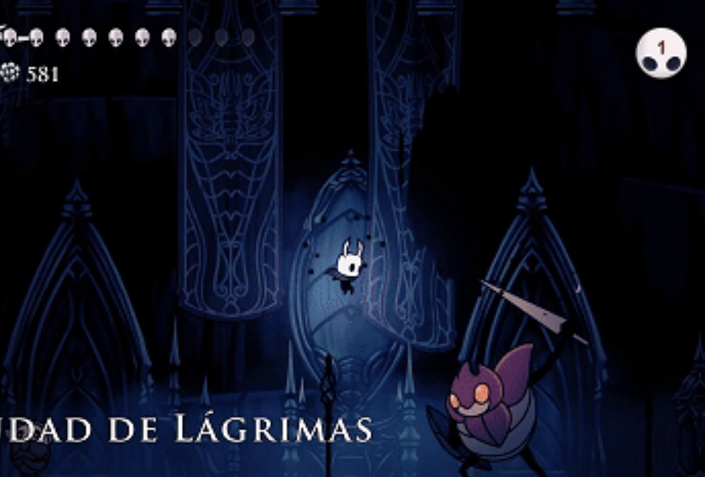

En esta sección destaco los proyectos más relevantes que he realizado hasta ahora. Aunque mi recorrido aún está empezando, cada uno de estos trabajos refleja mi aprendizaje, mis intereses y mi evolución como desarrollador.
Calculadora en Bash

Una calculadora hecha entera y completamente en bash, que tiene la capacidad de realizar sumas, restas, multiplicaciones, divisiones y resto teniendo en cuenta divisiones entre 0...
Robot Siguelineas PID

Este proyecto implementa un sistema de control PID en C++ para el seguimiento de línea mediante un sensor infrarrojo. Detectando una línea negra sobre fondo blanco, es capaz de seguirla ajustando dinámicamente su movimiento para corregir desviaciones en tiempo real. Fue probado en la competición Asti Robotics Challenge, lo que permitió validar su rendimiento en un entorno real y competitivo.
Wifi Dock Tool

Este proyecto desarrolla un sistema de control remoto que permite, mediante joysticks, enviar información por WiFi usando el protocolo UDP a otro dispositivo para su interpretación en tiempo real. Fue diseñado para controlar un robot durante la competición de sumo de Asti Robotics Challenge, garantizando una comunicación rápida y eficiente entre el mando y el robot en un entorno competitivo.
Traductor a Morse

Un traductor a código Morse desarrollado en Python, capaz de convertir texto escrito en lenguaje natural a su representación en Morse. Me permitió experimentar con efectos como la impresión lenta del texto en pantalla, haciendo la salida más dinámica y expresiva.
Lector de Dirección de Memoria

Este proyecto consiste en un script en Python que detecta cambios en una dirección de memoria de un proceso en ejecución, permitiendo contar cuántas veces se modifica un valor. Me permitió profundizar en el funcionamiento de la memoria además de la creación de interfaces transparentes con tkinter.